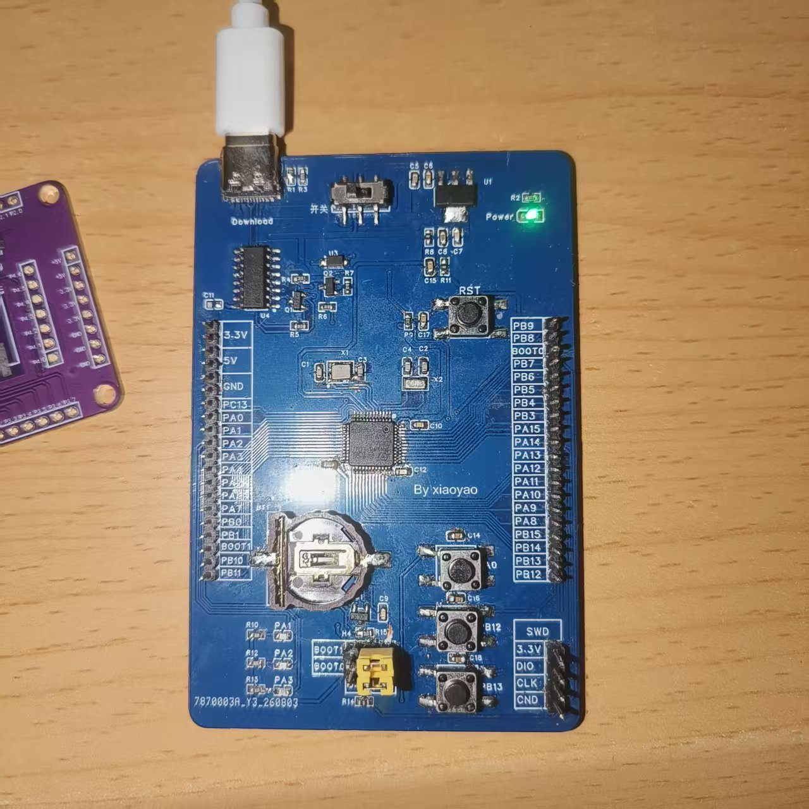
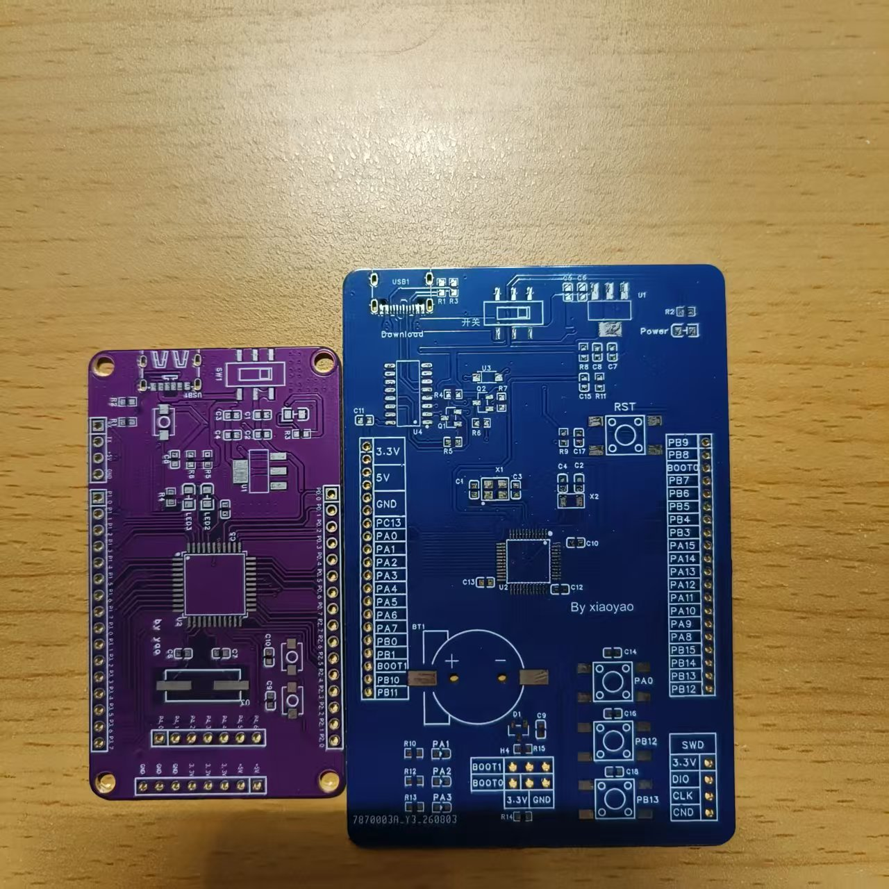
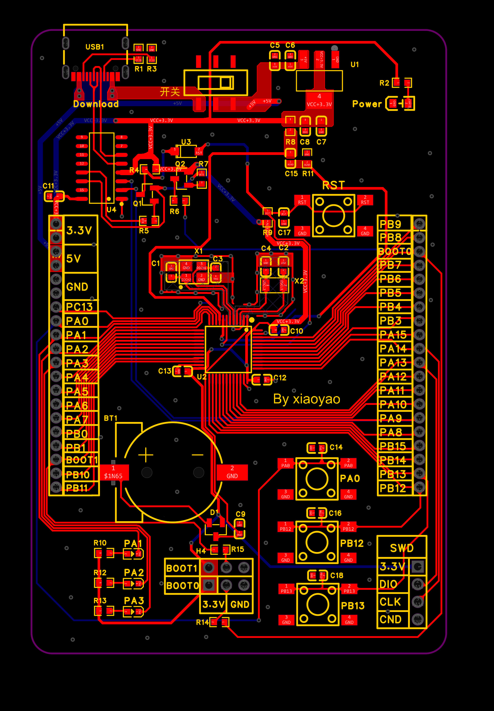
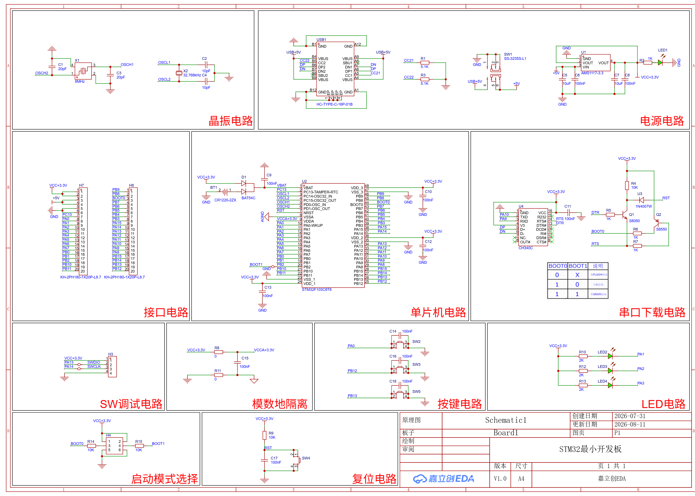
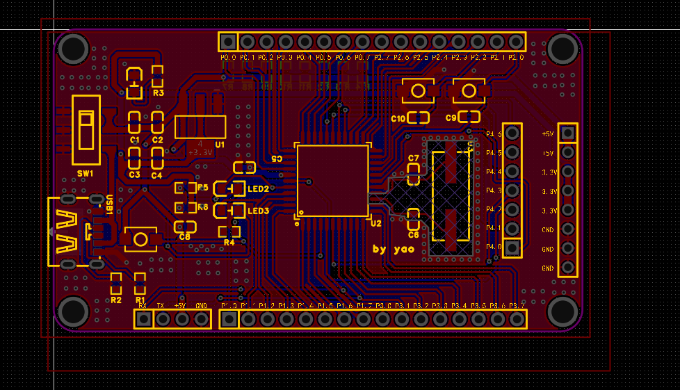
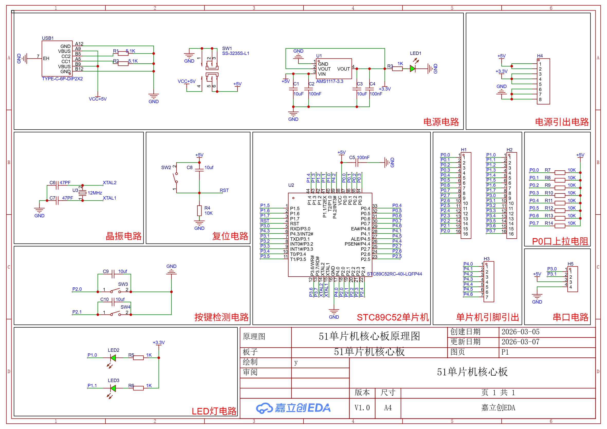

热爱底层技术，具有扎实的编程基础。善于快速学习新技术并应用于实际项目中。
广州软件学院电子与计算机工程专业（2027 届本科），专注嵌入式软件开发。独立完成 STM32F411 + LVGL 桌面智能时钟等完整项目，熟悉 C、STM32、FreeRTOS、常见通信协议（I2C/SPI/UART）与硬件调试，具备从驱动到 UI、联网、低功耗的全流程开发能力。
项目背景：桌面场景下，时间、天气、温湿度、计时分散在多个设备，查看不便；用 STM32F411 + 256×64 4bit 灰度屏做一屏整合，并在 128KB RAM 内兼顾联网与续航。
技术栈：C / STM32F411 / LVGL 8.3.11 / SSD1322 / ESP8266 AT / AHT20 / BMP280 / MPU6050 / Keil MDK
优点：驱动 / UI / 业务 / 网络分层解耦；128KB 内跑 30 页、资源占用低；断网可读缓存 + 网页配网免 App，完成度高。
缺点与改进方向：① 裸机状态机为主，模块增多后可读性下降 → 计划 FreeRTOS 重构；② 低功耗仍有空间（RTC 180s 周期采样）→ 优化唤醒策略、关断外设电源；③ 缺单元测试 → 补环形缓冲、JSON 解析等关键模块单测。
独立完成 STM32 及 51 单片机双层 PCB 的原理图设计、布局布线，并完成打样后的元器件手工焊接与测试。具备扎实的硬件电路基础和动手能力。（点击图片可放大查看细节）

📸 STM32 核心板打板后焊接完成实物图
📸 STM32 与 51 打板裸板 (未焊接)
💻 STM32 PCB Layout 图
📐 STM32 原理图
💻 51 单片机 PCB Layout 图
📐 51 单片机原理图